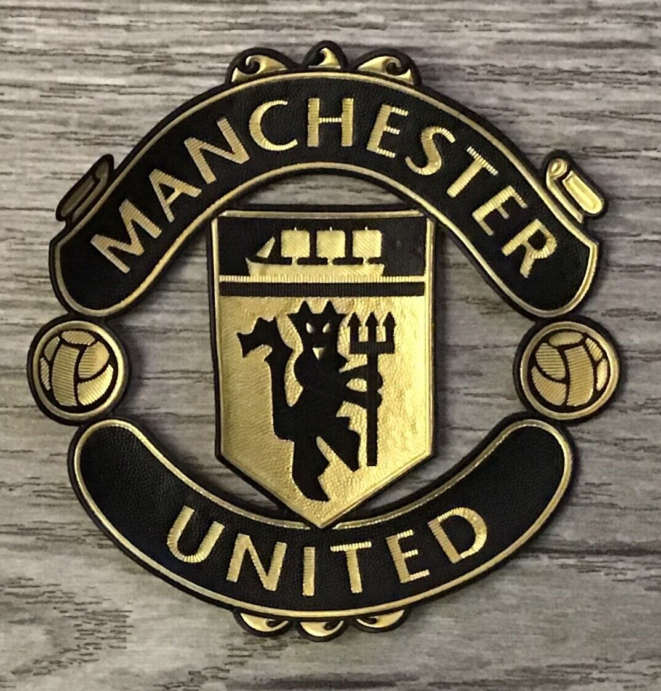

Manchester United has won 12 Premier League titles since that league's inaugural season in 1992–93. In the 1998–99 season the club secured the first “treble” in English football history by winning the Premier League, the FA Cup, and the Champions League. A second Champions League victory came in the 2007–08 season.
| Category |
Information |
| Founded |
1878 |
| Stadium |
Old Trafford |
Famous quotes
“I feel close to the rebelliousness and vigour of the youth here. Perhaps time will separate us, but nobody can deny that here, behind the windows of Manchester, there is an insane love of football, of celebration and of music.” — Eric Cantona
“As long as we are successful on the pitch, then I will be here—unless Manchester United put in a call. But I don't think Sir Alex Ferguson is planning to step down just yet!” — Paul Ince
“In all modesty, my summing up of 1955-6 and 1956-7 must be that no club in the country could live with Manchester United.” — Matt Busby